AI検索を研究している
代表は博士（工学）。論文を読み、複数のAIに実際に質問して、AIがどの情報を根拠に答えているかを確かめています。
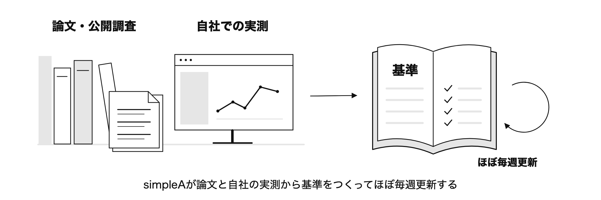
トップ / AI検索対策
AIが御社を正しく紹介するよう、AIの回答とその根拠のページを調べ、対策を提案します。simpleAは、AI検索を研究している会社です。
AI検索対策について相談する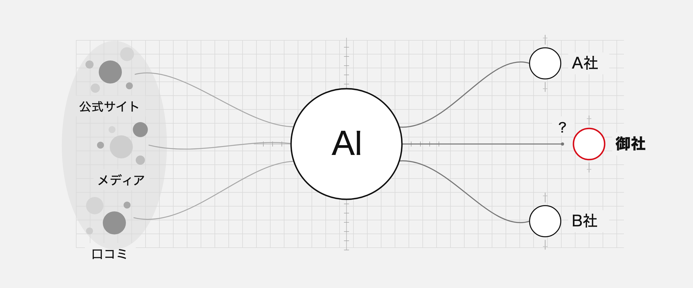
自社が紹介されない理由も、紹介内容が違う理由も、simpleAが、AIの回答と、AIが根拠にしたページを調べて確かめます。
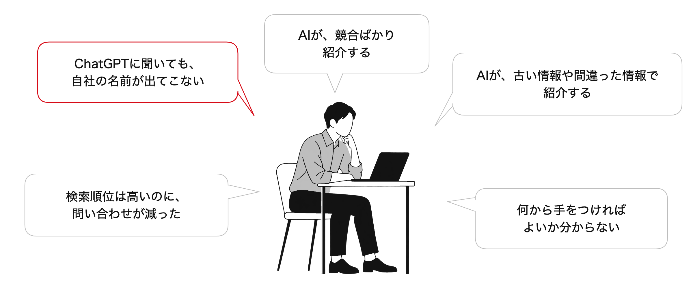
ChatGPTに聞いても、
自社の名前が出てこない
AIが、競合ばかり
紹介する
AIが、古い情報や間違った情報で
紹介する
検索順位は高いのに、
問い合わせが減った
何から手をつければ
よいか分からない
同じではありません。検索で上位でも、AIの回答に入るとは限りません。商品や取引先をAIに相談する人がいるので、検索順位に加えて、AIが御社をどう紹介しているかも確かめる必要があります。
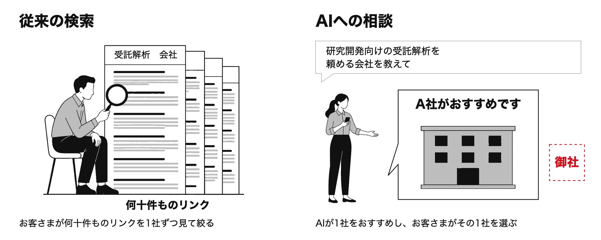
グラフの棒は、いずれも0〜100%の同じ尺度です。対象者・地域・調査方法が異なるため、3つの調査の数値同士は比較できません。
simpleAの調査では、AIが書いた乳酸菌の学名86件のうち5件が、公式資料と異なっていました。
出所：simpleA調査（2026年10月21日）。4つのAIに50問ずつ質問し、公式資料で確認できた学名の記述86件を照合しました。一致は74件、不一致は5件、判定できなかったのは7件です。AI全体の正確さを示すものではありません。
サービスは2つあります。1つ目は、調査・改善支援・効果検証をセットにした「3か月支援パッケージ」。2つ目は、そのあとも続けて支援する「顧問契約」です。
サービス1 3か月支援パッケージ調査から効果検証まで、最短3か月
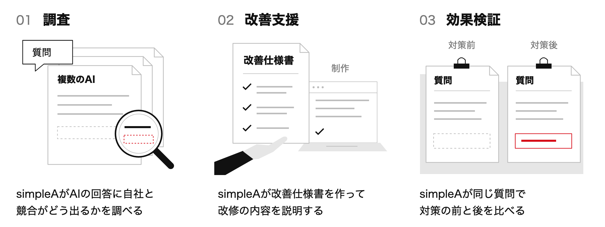
複数のAIの回答と、その根拠のページを解析します。AIが紹介している内容と、間違いがないかを調べます。
選べる納品物
改善仕様書を作ります。御社または制作パートナーが改修するときは、内容を説明し、仕上がりを確認します。
選べる納品物
同じ質問でもう一度調べ、AIの回答に引用される割合と、AIの間違いの有無を、対策の前後で比べます。
選べる納品物
納品物は、上記の6項目から必要に応じて選べます。
サービス2 顧問契約3か月支援パッケージのあとも、長期的に
期間は最短の目安です。外部メディアに掲載されることや、AIが御社を紹介することを、保証するものではありません。
simpleAは、研究と実測の結果を示しながら、実際に効果のある対策を選びます。制作の受注は目的にせず、調査・提案と、制作の支援を行います。
代表は博士（工学）。論文を読み、複数のAIに実際に質問して、AIがどの情報を根拠に答えているかを確かめています。

論文と自社調査の結果から、効果が確かめられた対策をまとめた、simpleA独自の基準をつくり、ほぼ毎週更新しています。この基準をもとに、対策を選びます。
simpleAは、調べる側の立場で、必要な対策を提案します。制作・改修そのものは基本的に請け負いません。その代わり、改善仕様書を作り、制作の内容を説明し、仕上がりを確認します。制作は、御社または制作パートナーが行います。
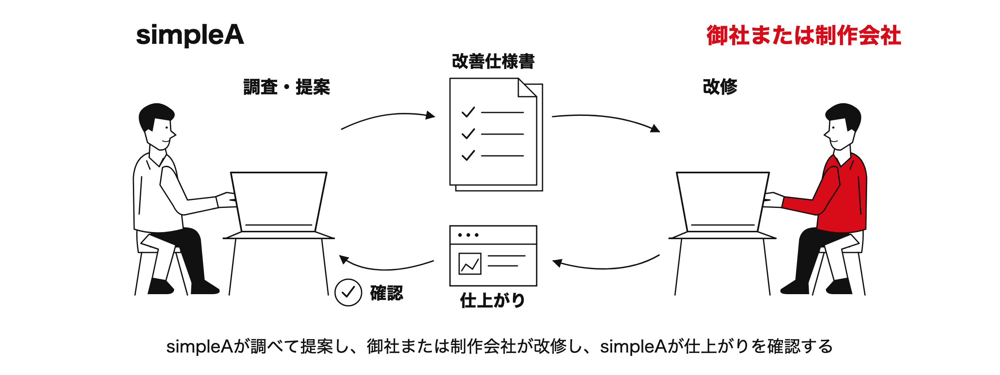
たとえば、llms.txt（AI向けの案内ファイル）は、設置を推奨していません。 約30万のサイトを調べた分析では、このファイルを置いているサイトと置いていないサイトで、AIが根拠に選ぶ頻度に明確な差は見つかりませんでした。出所：SE Ranking（2025年11月）。ファイルの有無とAIの選ぶ頻度の関係を見た調査で、原因と結果までは証明していません。
simpleAは、お客さまの質問、AIが根拠にしたページ、自社サイト以外の情報、AIが読めない情報を調べます。
お客さまが実際に使う問い合わせや検索の言葉から質問を作り、検討が進む段階ごとに質問を変えて調べます。
絵の質問は、弁護士探しを例にした、イメージです。
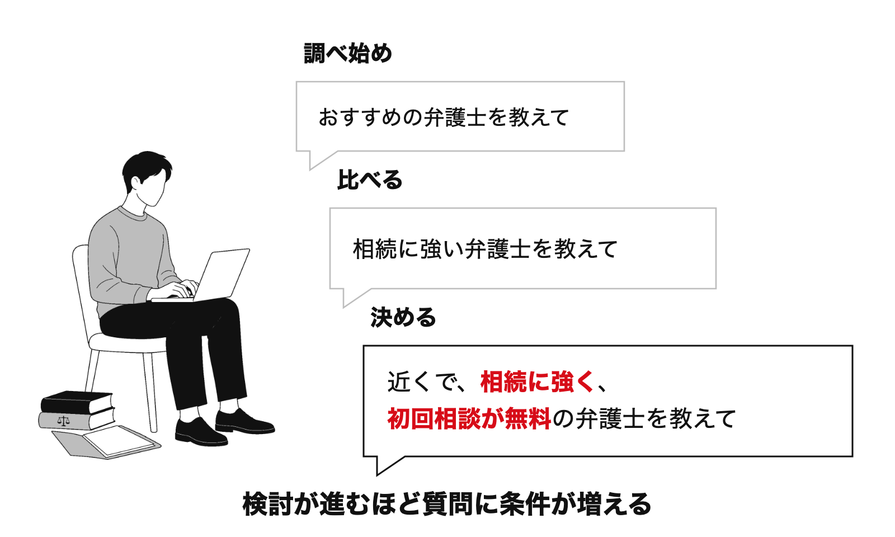
AIが根拠に挙げた2,000件以上のページを、すべて解析します。御社のサイトに足りない点と、競合サイトの強みを確認します。
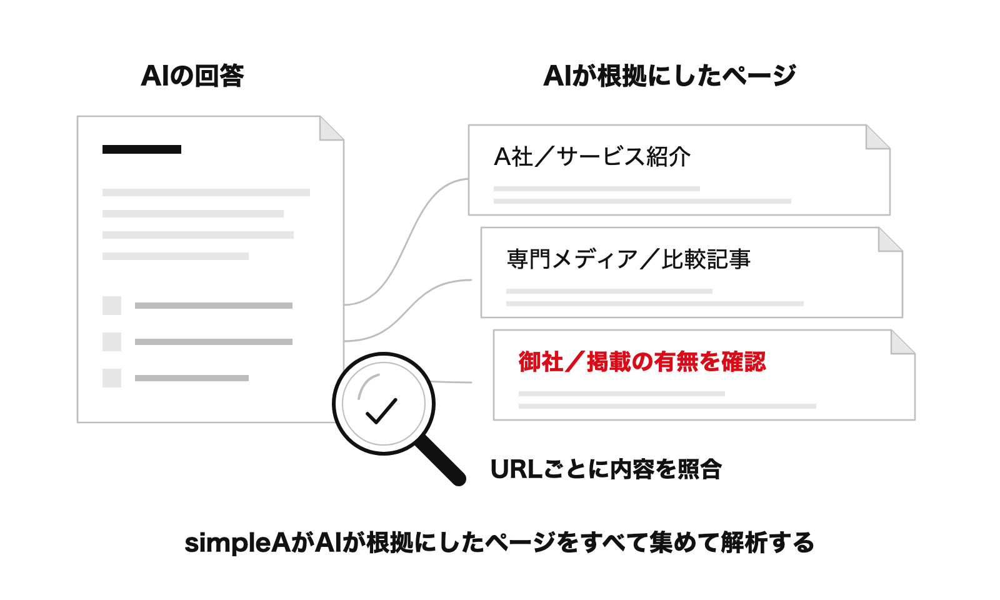
専門メディア・比較サイト・口コミが、AIの回答の根拠になっているかも調べます。
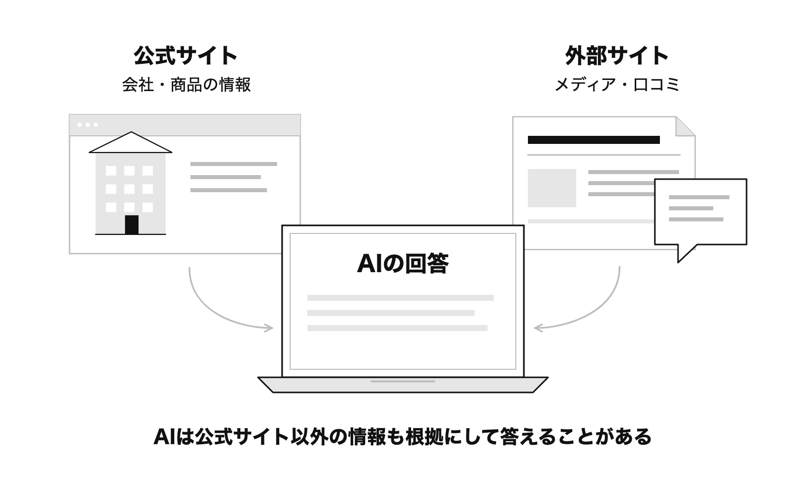
AIが読めない情報や、古い情報が残っていないかを確認します。確かめた事実と、原因についての推測を分けて報告します。
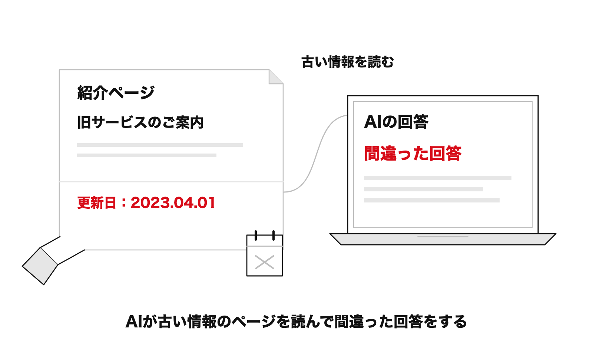
出所：simpleA提案資料（2026年10月）。「2,000件以上」は1回の調査規模の目安です。
アニサキスアレルギー協会のサイトがChatGPTの回答に引用された割合は、同じ57問で、2026年7月の42.1%から10月の78.9%になりました。
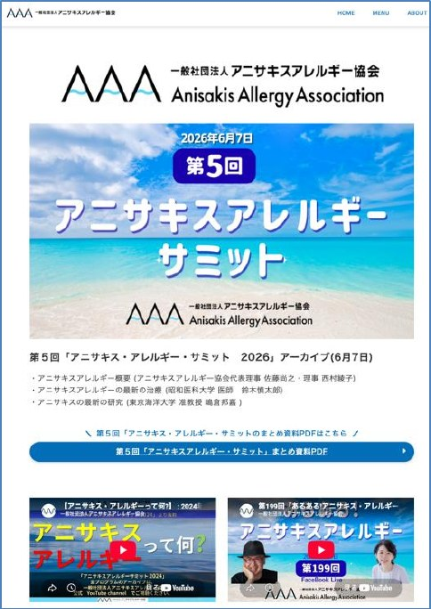
公開事例同じ57問で、協会のサイトが引用された回答は24問から45問へ。
詳しく見る →食品・飲料メーカー／産業用機械メーカー／士業（行政書士など）／建設業を支援してきました。
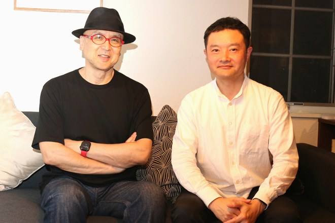
AI検索対策ファンベース
企業のファンづくり（ファンベース）を支援する会社。AI検索対策とファンベースを組み合わせた取り組みで協業。
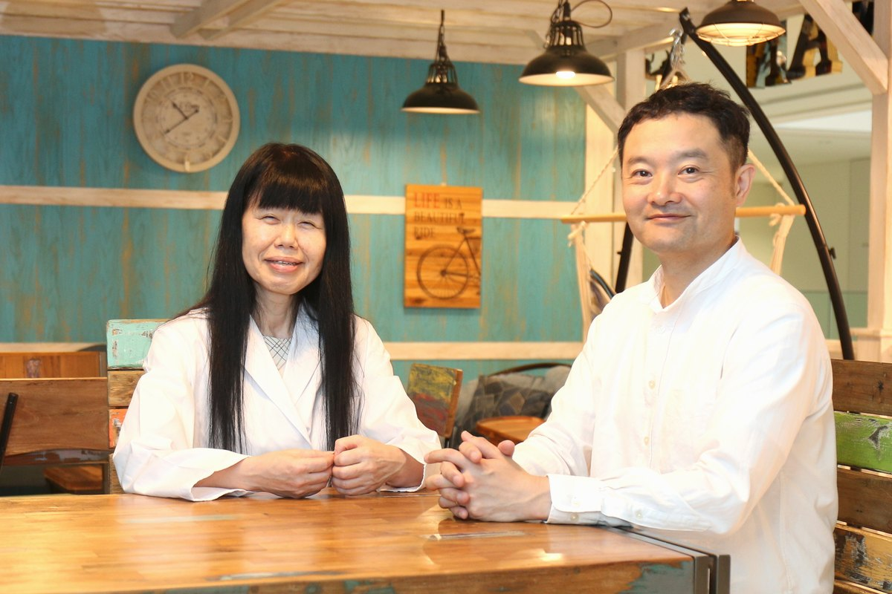
AI検索対策食品免疫・研究資産の発信
十文字学園女子大学発ベンチャー。食品免疫・粘膜免疫を専門としています。simpleAと共同で、「研究成果発信のためのAI検索対策パッケージ（食品・免疫版）」を提供します（2026年11月1日開始予定）。
simpleAは、佐藤尚之さん（『AIに選ばれ、ファンに愛される。 変わる生活者とこれからのマーケティング』著者）が主宰するコミュニティ「7th」で、セミナーと会員向けの談話会を続けています。「行政書士の学校」をはじめ、各所で講師を務めています。
下記のセミナーは、いずれもオンライン（Zoom）で開催し、参加は無料です。主催は株式会社simpleAです。
登壇：辻 典子（農学博士／十文字学園女子大学 人間生活学部 食品開発学科 教授／株式会社フードメディシン研究所 代表取締役）、冨士川 凛太郎
詳細・参加申込（LINK-J）登壇：桑原 知巳（医学博士／香川大学医学部 分子微生物学 教授）、冨士川 凛太郎
詳細・参加申込（LINK-J）検索対策との違い、調査対象、効果の確かめ方についてお答えします。
SEOは、検索結果で見つけてもらいやすくする取り組みです。AI検索対策は、AIの回答での紹介内容と、その根拠を確認して改善する取り組みです。SEOの代わりではなく、SEOに加えて取り組みます。
情報の整理についてのnote記事を読む一度の結果だけでは判断できません。自社のページを変更していなくても、AIの仕組みが変わると、回答が変わることがあります。そのため、同じ質問・同じ条件で、継続して調べます。
継続観測のnote記事を読む一律に必要だとは考えていません。simpleAは、まず情報を「お客さまの質問・その答え・答えの根拠」の順に整理することを重視します。構造化データ（ページの内容を、検索エンジンやAIが読み取りやすい形で書き足す方法）は、そのあとに検討します。llms.txtは、設置を推奨していません。
構造化について読む ／ llms.txtについて読むChatGPT、Gemini、Claude、Perplexity、Google AI Overview、Google AI Modeなどから、御社の調査目的に応じて決めます。AIによって紹介する企業や根拠にするページが異なるため、複数のAIを確認します。
AIごとの違いを調べたnote記事を読む自社サイトだけでは十分ではありません。AIは、専門メディアや比較サイトも根拠にして答えることがあります。そのため、実際の回答を調べ、自社サイト以外のページが御社をどう紹介しているかも確認します。
公式サイトと外部サイトを調べたnote記事を読む「AIに自社が出てこない」「紹介内容が違う」など、気になっていることをお聞かせください。どの事業を、どこまで調べるかを、一緒に決めます。
AI検索対策は、LLMO・AIO対策とも呼ばれます。